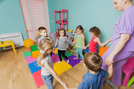

Learning Experiences
0-2 Years
Baby Dance Time


Play gentle music and encourage babies to move along with the rhythm. Use scarves and ribbons to add a visual element to the activity.
2-3 Years
Musical Instruments Exploration


Provide simple musical instruments like tambourines and maracas for toddlers to explore sounds and rhythms. Encourage them to play along with songs.
3-5 Years
Action Songs


Teach children songs with corresponding actions and movements. This activity helps with memory, coordination, and following instructions.
6-8 Years
Dance Routines


Choreograph simple dance routines to popular songs. Encourage children to perform in groups or individually, promoting teamwork and confidence.